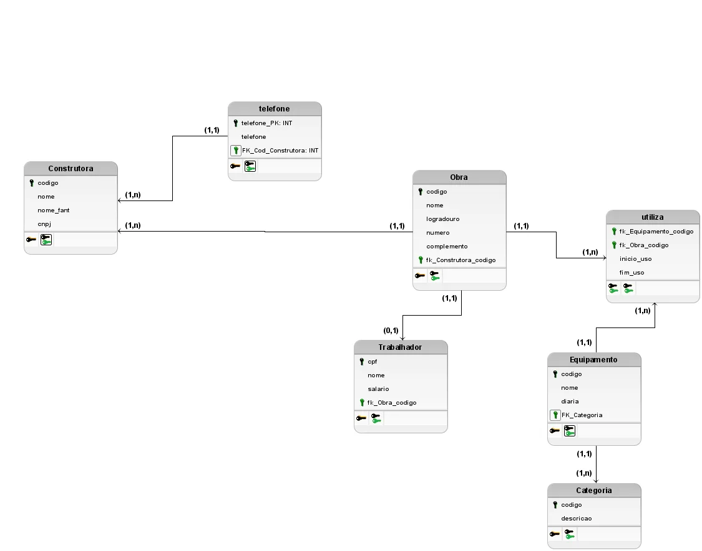
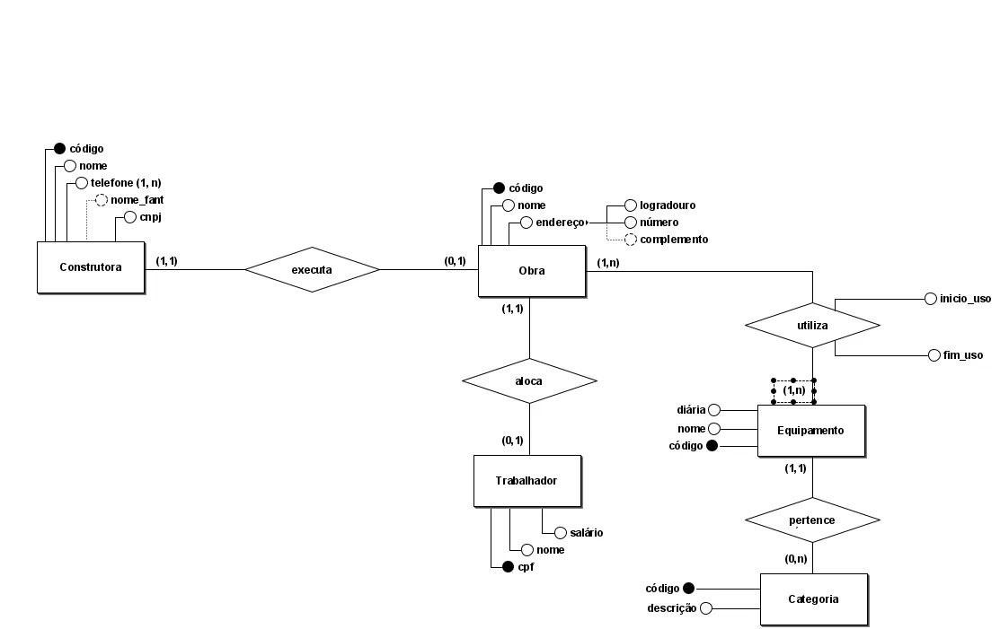

Projeto acadêmico • fev. 2026
Banco de dados de uma construtora
Modelei e implementei do zero um banco relacional para controlar construtoras, obras, trabalhadores e os equipamentos locados para cada obra.

Objetivo
O trabalho pedia um banco de dados para uma empresa de construção civil. Passei por todas as etapas: modelagem conceitual, modelagem lógica, criação das tabelas (DDL), carga de dados (DML) e consultas. Os dados de empresas, CPFs, CNPJs e endereços são fictícios.
Regras de negócio
- Uma construtora executa várias obras, e cada obra pertence a uma única construtora.
- Cada trabalhador está alocado em uma única obra.
- Uma obra usa vários equipamentos, e um equipamento pode ser usado em várias obras. Esse relacionamento N:N guarda as datas de início e fim de uso.
- Cada equipamento pertence a uma categoria e tem um valor de diária.
- Uma construtora pode ter vários telefones, por isso o telefone ganhou uma tabela própria.
Tabelas
| Tabela | Chave primária | Chave estrangeira |
|---|---|---|
| Construtora | codigo | |
| Telefone | telefone_PK | Construtora |
| Obra | codigo | Construtora |
| Trabalhador | cpf | Obra |
| Categoria | codigo | |
| Equipamento | codigo | Categoria |
| Utiliza | equipamento + obra (composta) | Equipamento, Obra |
Uma das consultas
A folha de pagamento de cada obra, somando o salário dos trabalhadores alocados nela:
SELECT o.nome AS obra, SUM(t.salario) AS folha_pagamento
FROM Trabalhador t
JOIN Obra o ON t.fk_Obra_codigo = o.codigo
GROUP BY o.nome;As outras consultas usam filtro por salário, JOIN entre três tabelas com ORDER BY e uma subconsulta com NOT IN para achar equipamentos que nunca foram usados.
Revisão depois da entrega
Depois de entregar, revisei os scripts e encontrei duas diferenças entre o modelo lógico e a implementação. A chave estrangeira entre categoria e equipamento estava do lado errado, o que fazia cada categoria apontar para um único equipamento. E a construtora guardava só um telefone, embora o modelo previsse vários. Corrigi as duas e ajustei a ordem de criação das tabelas. A versão entregue continua no histórico do repositório.
Modelo conceitual
